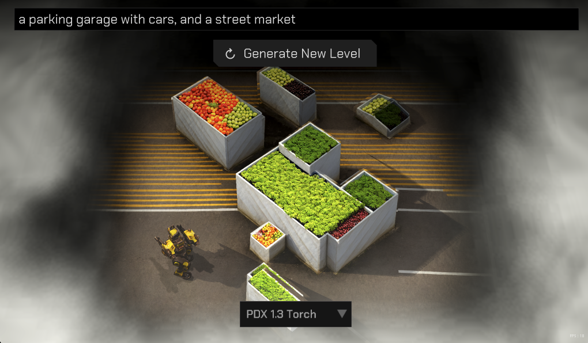
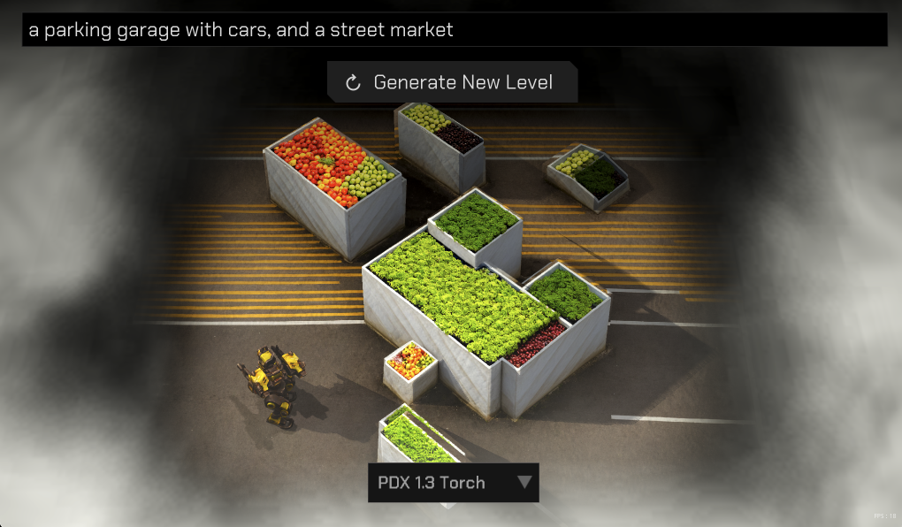
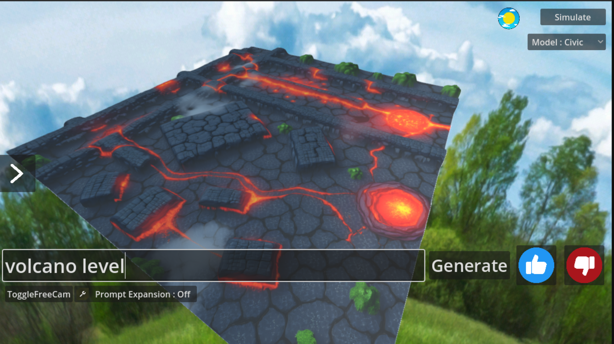
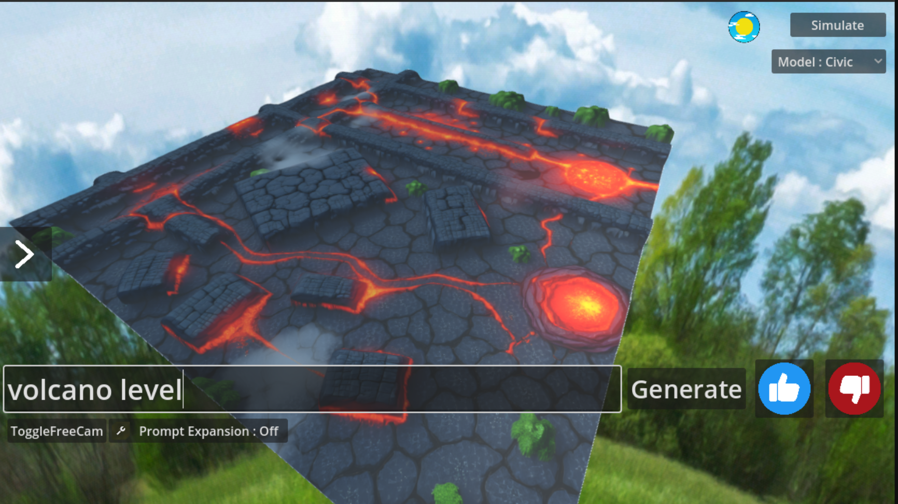

Proto 2
Runtime Generation Engine. Text prompts → 3D playable levels. ComfyUI, generative AI workflows.
This project aims to generate an entire 3D video game level and game mechanics from just a text prompt. It is built on an extremely complex backend system involving intricate AI workflows, specially trained models, and backend operations.
Demos & Workflow
Process & Results
 



 
